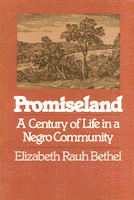

Historical microcosm of the many black communities in which people devised unique strategies for coping with their racially defined subordinate status
Historical microcosm of the many black communities in which people devised unique strategies for coping with their racially defined subordinate status


 Historical microcosm of the many black communities in which people devised unique strategies for coping with their racially defined subordinate status
Historical microcosm of the many black communities in which people devised unique strategies for coping with their racially defined subordinate status

|  |
PromiselandA Century of Life in a Negro CommunityElizabeth Rauh Bethelpaper EAN: 978-0-87722-275-0 (ISBN: 0-87722-275-4) |
"Promisland is simply a spendid study in American social history. No recent book tells more about the twentieth century rural black community and how its men and women dealt with opportunity and oppression. Southern black immigrants to northern cities look very different because Bethel has liberated them from sterile social stereotypes."
—Herbert Gutman
The Promised Land—or, as it is called by its residents, Promiseland—community in South Carolina was born in 1870 as a settlement of black farmers, tenants, and sharecroppers, many of whom owned the land they farmed. One hundred years later, it is a community of black laborers, clerical workers, and self-employed and skilled blue-collar workers who own the same land that formed the basis of that first community. Its history is a microcosm of the many black communities in which people devised unique strategies for coping with their racially defined subordinate status. Elizabeth Bethel portrays, through the people who make Promised Land the seminal force it is in their lives today, the personal strength, community support, and family integrity that defied racial abuse for one hundred years.
In telling the story of this unusual community, the author focuses on three questions. What were the forces that attracted freedmen to and held them at Promised Land? How did land ownership combine with other factors, traditions, and institutions to shape the nature of life there? After the Great Migration north, how were ties of kinship and their obligations transplanted from a rural to an urban setting? This story is one of human struggle, need, and hope. Elizabeth Bethel tells it as much as possible in the words of the people who lived it, so that her researcher's questions are answered in the moving and compelling accents of the human voice.
The book is divided into three parts, each focusing on a generation. Part I traces the growth of the community from 1870 to the turn of the century. Part II follows the residents through the crises of the boll weevil invasion and World War I to the beginnings of the migration north. Part III examines community life from the onset of the Great Depression to the modern civil rights movement.
"What emerges from her impressively abundant raw data is a picture of Promised Land as an evolving, growing community. Bethel's use of living informants in conjunction with historical sources produces a rich blend ...stimulating and important."
—David Bradley, The New York Times Book Review
"One of the most interesting stories of Negro life to come to print. As such, it is bound to take a place of honor alongside the increasing amount of Negro history that is finally emerging. Well done."
—Jack Leland, Charleston Evening Post
Elizabeth Rauh Bethel is Associate Professor of Sociology at Lander College in South Carolina.
African American Studies
Sociology
© 2015 Temple University. All Rights Reserved. This page: http://www.temple.edu/tempress/titles/230_reg.html.